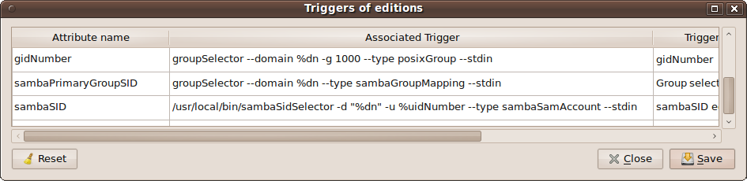
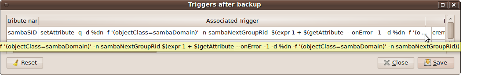
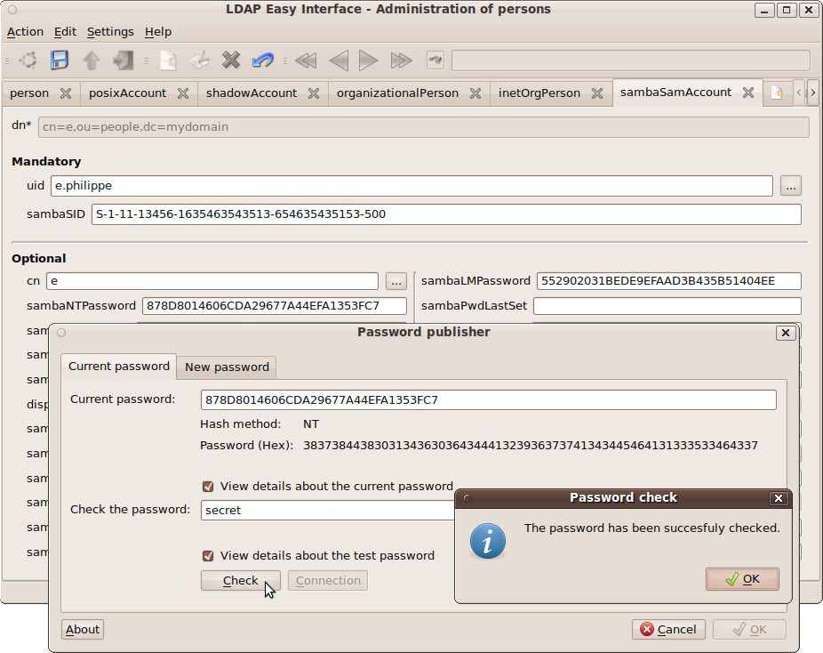
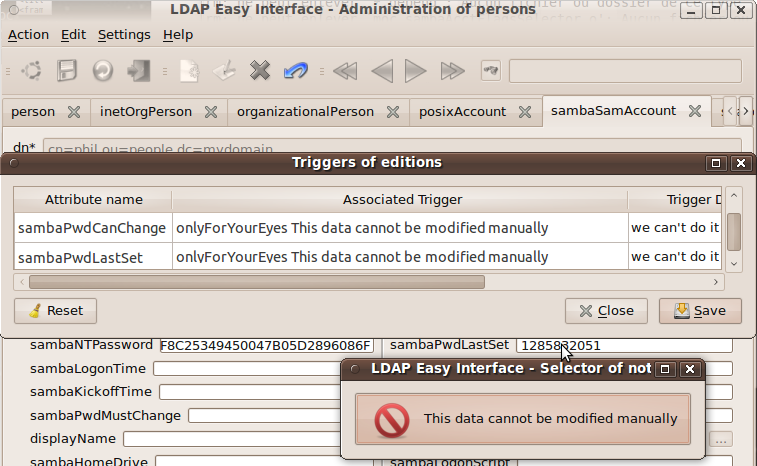
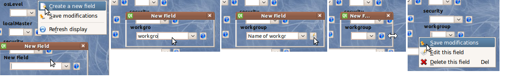

Page suivante
Page précédente Sommaire (Français - English)
Les sources de la version opérationnelle sont
là.
Cet extension ("
plugin") est également utilisable au sein de l'interface "
domainFrontend".
11.2 Utilitaire "sambaSidSelector" d'aide à l'édition de l'attribut "sambaSID"
Cet utilitaire sera utilisé dans les interfaces "
personFrontend" et "
posixGroupFrontend" :
Les sources de la version opérationnelle sont
ici... (version 0.2 - 20101012)
Syntaxe : "
sambaSidSelector --domain "dnsDomainName" [--uidNumber #] [--gidNumber #] [-t/--type "sambaSamAccount/sambaGroupMapping/alias"] [--stdin / "currentValue"]"
- L'option obligatoire "-d/--domain" permet de renseigner le nom du domaine dans lequel rechercher la racine du "SID" (une valeur de "dn" peut être renseignée, seule la valeur "dc=..." indiquant le nom de domaine sera conservée).
- Les options "--uidNumber/-u" et "--gidNumber/-g" servent à renseigner les "id" qui permettront de calculer le "RID" en fin de "SID", cela lorsque l'attribut "sambaAlgorithmicRidBase" est utilisé dans la définition du domaine "Samba" référencé par l'option "--domain" précédente.
- l'option "-t/--type" permet de figer la première liste de valeurs (comboBox) du masque d'édition sur respectivement "user" ou "group", ceci afin de cadrer au mieux la nature de l'information ("SID") saisie par l'opérateur ...
- une valeur de "SID-RID" passée en argument de la commande (ou bien : "--stdin/-" pour la valeur passée en entrée standard du processus, comme dans le cas des interfaces "ldapEasyInterface-Frontend") permet à l'utilitaire "sambaSidSelector" d'afficher une valeur initiale.
Nota : Cet utilitaire d'aide à l'édition "sambaSidSelector" se connecte à l'annuaire LDAP avec les informations de connexion de l'interface appelante (via les IPC
- shared memory). Il
ne peut pas, en effet, se connecter seul à l'annuaire pour y rechercher
les informations qui lui permettront de déterminer une valeur cohérente
de "SID" ; une session de connexion doit donc déjà être active lors de son lancement, ceci via
l'une des interfaces graphiques d'administration "ldapEasyInterface" déjà ouverte ...
Exemple d'utilisation dans la définition des déclencheurs de l'interface d'administration "personFrontend" :




"
groupSelector" s'obtient par la commande : "
ln [-s] sambaSidSelector groupSelector" ...
11.3.1 Utilitaire "ntpassword" de mise à jour des mots de passe "samba" :
L'interface graphique "
slappassword"
version 0.2 a été modifiée vers sa version 0.3 (à partir de sources du projet "
Samba"), cela
afin de permettre outre l'édition des mots de passe "
posix", celle également des attributs "
sambaLMPassword" et "
sambaNTPassword" :

Syntaxe d'utilisation :
ln [-s] /usr/local/bin/slappassword /usr/local/bin/ntpassword
ntpassword
[ (-H/--host "hostname[:port]") / ("anIPCLdapConnectionIsActive") --dn/-d "userDn" [--update] ] [-N/--NTPassword [NThash] ] [-L/--LMPassword [LMhash] ] [--date "secondesSince1970"] [--minLength/-m #] [--stdin / "hashedPassword"]
- L'option "--host/-H" sert à indiquer le nom du serveur hébergeant l'annuaire LDAP (pour le test de connexion et/ou l'option "--update"). Cette option est facultative si une connexion LDAP est déjà active (décrite en "shared memory") via l'une ou l'autre des interfaces graphiques "ldapEasyInterface" déjà en cours d'exécution et elle-même connectée.
- L'option "--dn/-d" : sert à indiquer le DN
de l'identifiant de connexion pour lequel on souhaite vérifier/mettre à
jour le mot de passe. Elle doit être associée à l'option "-H" ou bien à une connexion IPC (shared memory) active.
- Les deux options "-N/--NTPassword" ou "-L/--LMPassword permettent de limiter le choix des hachages sélectionnables en "ComboBox"
et par conséquent utilisables pour la définition d'un nouveau mot de passe. Les deux
options activées simultanément restreignent le choix à : "LMHash:NTHash".
En outre, ces 2 options admettent chacune une valeur de hachage qui
prédomine sur l'éventuel paramètre passé en entrée standard (ou, hors
option, sur ligne de commande). Elles conditionnent également
l'affichage en sortie standard du nouveau mot de passe validé.
- L'option "--date"
permet de spécifier une date de référence (au format UNIX : secondes
depuis 1970) avant laquelle la modification de date n'est pas permise par le masque de saisie.
- L'option "--minLength"
permet de spécifier une longueur minimale de mot de passe (option sans aucune valeur -> 5) avant possibilité de validation.
- L'option "--update"
permet de préciser que, lors de la validation, les attributs
"sambaLMPasswd" et/ou "sambaNTPassword" seront effectivement mis à
jour dans l'annuaire LDAP. Cette option doit être utiliser conjointement avec :
- soit les deux options "-H" et "-d" renseignées,
- soit l'option "--dn" seule mais avec une connexion LDAP active décrite en "shared memory".
- une valeur de hachage passée en argument de la commande (ou bien : "--stdin/-"
pour une valeur passée en entrée standard du processus) permet de
renseigner la valeur courante du mot de passe (par exemple, pour sa
vérification éventuelle).
11.3.2 Application pratique à la mise à jour des champs "samba(LM/NT)Password" de l'interface "personFrontend" :
Le
problème qui se présente ici est que l'on a deux attributs (deux
hachages d'un même mot de passe) à mettre à jour dans l'annuaire ...
Outre le fait qu'il peut s'avérer fastidieux à la longue de saisir deux fois (voire trois si l'on inclue le mot de passe "
posix") un même mot de passe pour un même utilisateur, l'unicité attendue n'est pas vraiment garantie.
Cela n'est pas forcément bloquant concernant le mot de passe "
posix"
; cela peut même s'avérer constituer une option souhaitée sur certains
sites ou par certains utilisateurs (mot de passe "Email"
!= mot de passe des partages réseau "
samba"). Cependant, cela s'avère problématique pour les deux hachages (
LM/NT) du mot de passe "
samba" ...
En outre, si l'opérateur modifie un premier attribut (par exemple : "
sambaLMPassword") puis en valide la mise à jour au sein de l'interface de saisie (par exemple, "
personFrontend"), les attributs "
sambaPwdLastSet" et "
sambaPwdCanChange" seront également mis à jour durant cette validation, cela par le mécanisme des "
déclencheurs après mise à jour". Il se peut donc fort bien que
l'opérateur, s'apercevant par la suite de son oubli de mise à jour sur
le second attribut "
sambaNTPassword"
se trouve alors dans l'impossibilité de rectifier son erreur du fait du
délai minimum de validité des mots de passe défini par l'administrateur
du domaine :
sambaMinPwdAge !...
La solution est la suivante :
Definitions of Triggers during the editions
|
Attribut Name
|
Associate Trigger
|
Description
|
userPassword
|
slappassword --stdin
|
posixPwd edit
|
sambaLMPassword
|
onlyForYourEyes Edit rather attribute 'sambaNTPassword'
|
No edition
|
sambaNTPassword
|
$(%null=ntpassword
--date 0%sambaPwdCanChange -N -L " %sambaLMPassword:" -m
0$(getAttribute -d "%dn" -n sambaMinPwdLength --scope onelevel -f
'(objectClass=sambaDomain)') --dn "%dn" --update --stdin
$(%sambaPwdLastSet = date "+%%s")) $(%sambaPwdLastSet=date +%%s)
$(%sambaPwdCanChange=expr $(date +%%s) + 0$(getAttribute --domain "%dn"
--name sambaMinPwdAge --scope onelevel -f '(objectClass=sambaDomain)'))
$(%sambaLMPassword=getAttribute -b %dn -n sambaLMPassword) getAttribute
-b %dn -n sambaNTPassword |
NTPwd edition
|
sambaPwdLastSet
|
onlyForYourEyes This data cannot be manually modified
|
Automatic update
|
sambaPwdCanChange
|
onlyForYourEyes This data cannot be manually modified
|
Automatic update |
avec :
Definitions of Triggers on Displaying
|
Attribut Name
|
Associate Trigger
|
Description
|
| sambaPwdCanChange
|
date -d @%this "+%%Y-%%m-%%d %%H:%%M:%%S"
|
|
sambaPwdLastSet
|
date -d @%this "+%%Y-%%m-%%d %%H:%%M:%%S"
|
|
Remarque :
- l'utilitaire "getAttribute" s'obtient par la commande "ln -s /usr/local/bin/setAttribute /usr/local/bin/getAttribute" ... (voir : "setAttribute").
- l'utilitaire "ntpassword" s'obtient par la commande "ln -s /usr/local/bin/slappassword /usr/local/bin/ntpassword" ... (voir : "slappassword").
Cet utilitaire sera configuré en "
déclencheur d'édition" notamment au sein de l'interfaces "
personFrontend" pour faciliter l'édition du champ "
sambaAcctFlags" de l'objectClass "
sambaSamAccount" éventuellement ouvert :
Les sources de la version 0.1 sont
ici...
Syntaxe : sambaAcctFlagsSelector [--stdin / "currentValue"]
Exemple de définition (menu "Settings/Triggers definition") dans la liste des déclencheurs de "personFrontend" :
Sur l'attribut "sambaAcctFlags" : "/usr/local/bin/sambaAcctFlagsSelector --stdin"
Ce déclencheur (extrêmement complexe... ;-) "
onlyForYourEyes" permet d'aider l'opérateur à ... ne rien faire.

Cet utilitaire pourrait être remplacé (mais, sans affichage) par la commande : "
exit 1" ...
En réalité, le champs spécifique "
sambaPwdLastSet" sera mis à jour par le "
déclencheur sur mise à jour" "
setAttribute" de l'interface "
personFrontend" (en version minimale 1.3), cela à chaque fois que l'un des champs "
sambaNTPassword" ou "
sambaLMPassword" sera modifié (
voir ci-dessous).
Voici la définition du déclencheur sur mise à jour pour le champ "
sambaLMPassword" :
On notera, dans cette définition, la possibilité de récursivité sur la
syntaxe "
$(...)".
Les sources de la version opérationnelle de l'utilitaire
"setAttribute" sont ici ...
Syntaxe : setAttribute ((--baseDn/--dn/-b "entryDN") / (--domain/-d "dc=...")) --name/-n "attributeName" [
[--replace] / --add / --delete ] --stdin / "theNewValue" ] [-q/--quiet] [--onError \"value\"]
- L'option obligatoire "--dn" permet de renseigner le nom de l'entrée d'annuaire dont on souhaite modifier l'attribut.
- L'option "--domain/-d", alternative à la précédente mais également exclusive de celle-ci, permet de renseigner le "dn" de l'entrée à modifier mais de n'en retenir que la partie définition du domaine (à savoir, la partie "baseDn" uniquement en "dc=...").
- L'option également obligatoire "--name" renseigne le nom de l'attribut à modifier.
- L'option "--replace" (par défaut), "--add" ou "--delete" permet de spécifier le type de l'opération souhaitée.
- L'option "--filter/-f"
permet de définir un filtre de sélection permettant d'isoler l'entrée d'annuaire à
modifier. Lorsque cette option est utilisée, la recherche dans
l'annuaire LDAP est menée avec un "scope" en "subtree" (recherche au sein de la sous-arborescence définie par l'option "-b" ou "-d"). A défaut de cet option, le "scope" vaut alors "base" (recherche limitée au seul niveau spécifié par "-b" ou "-d").
- l'option "--stdin/- " (ou bien, la valeur simplement passé en argument de la ligne de commande, hors option) permet
d'indiquer la valeur que l'on doit substituer, ajouter ou effacer à
l'attribut sélectionné.
- l'option "-q/--quiet" permet de supprimer les affichages en cas d'erreur.
- l'option "--onError", valable uniquement pour la commande "getAttribute", permet de retourner une valeur spécifique (passée en argument de l'option) sur echec de la requête LDAP (par exemple : sur dn ou attribut non existant).
La connexion de cet utilitaire à l'annuaire LDAP est exclusivement réalisée via les
IPC
(
shared memory) selon les paramètres de connexion de l'interface graphique "
ldapEasyInterfaceFrontend" appelante ...
L'utilitaire "
getAttribute" s'obtient ainsi : "
ln [-s] setAttribute getAttribute".
Voici un exemple d'arborescence de définition (format "
LDIFF") du service
Samba
qui, associé à une entrée "
server" de l'annuaire
LDAP permettra d'en définir tous les paramètres à répercuter dans le fichier de configuration (
par exemple : "
/etc/smb.conf" ) sur le serveur physique (voire même virtuel, d'ailleurs... ;-) correspondant.
Nous allons définir une interface dynamique, paramétrable
(création/suppression/positionnement/dimensionnement de champs de
saisie sur un bureau - en mode graphique) par l'administrateur habilité (cf. "
sambaConfigFrontend").
Cela se présente ainsi :
avec, par exemple :
dn: cn=netbiosName,ou=fieldDefinition,ou=sambaConfigFrontend,ou=LdapEasyInterface,ou=ldap,ou=application,dc=mydomain
cn: netbiosName
description: the Netbios Name of the Samba service
l: -1309,-806,0,167,0,1,0
objectClass: LdapEasyInterface
objectClass: applicationProcess
objectClass: top
ou encore :
dn: cn=security,ou=fieldDefinition,ou=sambaConfigFrontend,ou=LdapEasyInterface,ou=ldap,ou=application,dc=mydomain
cn: security
description: the Samba security mode
l: -1303,-562,4,148,1,1,0,SHARE|USER
objectClass: LdapEasyInterface
objectClass: applicationProcess
objectClass: top
Ici se trouve la définition, au format "
LDIFF", de l'exemple de masque présenté ci-dessus ... Il peut/doit être enrichi ...
Exemple de procédure manuelle de création d'un nouveau champs de saisie :

- Création du nouveau champs par menu contextuel : "clic-droit sur le bureau",
- Saisie du nom d'attribut (à précéder d'un "." si non visible),
- Saisie du commentaire d'aide,
- Dimensionnement et positionnement du nouveau champs sur le bureau,
- Définition - clic-droit - du type de widget : lineEdit, checkBox, spinBox, comboBox, listWindow, VLine ou HLine,
- Réglage des propriétés du champs : "readonly", "enable", "mandatory", "virtual", saisie des valeurs initiales sur "comboBox",
- Sauvegarde du nouveau champs dans l'annuaire LDAP.
ATTENTION : Pour accéder à cette procédure, il convient toutefois que le compte de connexion LDAP utilisé possède le rôle "
adminMask" (cf: menu "
Help/About Roles" ...)
Voici un exemple de masque de saisie d'une ressource de partage "samba" :
Ici se trouve la définition, au format "
LDIFF", de l'exemple de masque présenté ci-dessus ...
...
Voici l'interface de paramétrage "
samba":
doSmbConf. Elle partage ses sources avec
getHostName. Elle peut donc être utilisée ainsi :
getHostName --smbconf
ou bien :
ln -s /usr/local/bin/getHostName /usr/local/bin/doSmbConf ; doSmbConf
Ce programme permet la génération automatique (déclenchée soit par "
cron",
soit au niveau des procédures de démarrage du système destinataire) du
fichier de configuration samba à partir des informations (si elles existent) contenues dans
la base LDAP et concernant l'adresse MAC du serveur courant (où la
commande est lancée) :
doSmbConf -v -U ldap://ldap... >/etc/samba/smb.conf
Nota : l'option "
--sharesOnly" permet de ne générer que la partie définition des ressources partagées "
samba",
cela pour permettre par exemple, via la ressource "cron", une mise à
jour périodique des options des partages sans nécessité de redémarrage
des processus de "
samba" (exemple à venir sur le modèle de
nfsdConf) ...
Exemple de shell-script de démarrage à installer (/etc/init.d/) sur chacun des serveurs de l'intranet à administrer :
...
# previous setting...
...
SMBCONFDIR="/etc/samba"
TMP=/tmp/doSmbConf.$$
NBCONF=$(${BIN}/getHostName --smbconf --number)
I=0; while [ $I -lt 0$NBCONF ] ; do
NETBIOSNAME=$(2>&1 ${BIN}/getHostName --smbconf -#$I >$TMP)
[ $? -eq 0
] && cat <$TMP >$SMBCONFDIR/smb_$NETBIOSNAME.conf
rm -f $TMP
I=$(expr $I + 1)
done
...
# next setting...
...
Exemple d'utilisation de cette interface sur la "base de tests" :
root@me:~/Cdev# doSmbConf --forceMacAddress 11:22:33:44:55:66
multimedia
// Here, it's "stderr"
// Now, it's "stdout"...
# @(#)LdapEasyInterface - Samba - Global Settings:
[global]
guest account = TRUE
hosts allow = 192.168.0.0/24
hosts deny = 192.168.0.1 192.168.0.2 192.168.0.3 192.168.0.4 192.168.0.5
netbiosname = multimedia
oslevel = 33
security = SHARE
server string = serveur de partage multimedia
workgroup = home
# @(#)LdapEasyInterface - Samba - Definitions of Shares:
[music]
browsable = TRUE
comment = Musics
force create mode = 0750
guest ok = TRUE
path = /var/data/musics
read only = TRUE
# @(#)setfacl = -m mask::w
[picture]
browsable = TRUE
comment = Pictures
force create mode = 0750
guest ok = TRUE
path = /var/data/pictures
read only = TRUE
# @(#)setfacl = -m mask::w
[video]
browsable = TRUE
comment = Videos
force create mode = 0750
guest ok = TRUE
path = /var/data/videos
read only = TRUE
# @(#)setfacl = -m mask::w
# @(#)LdapEasyInterface - End -
root@me:~/Cdev# echo $?
0
root@me:~/Cdev#
11.10 Les sources C++
Les sources de la dernière version (
20110913) de
"sambaDomain.so" sont ici avec sources des utilitaires d'aide à la saisie...
La dernière version (
20110830) des sources communes à
"libsambaconfig.so" et "libsambashare.so" est là.
"sambaShareFrontend" s'obtient par la commande SHELL :
ln [-s] /usr/local/bin/libsambaconfig.so /usr/local/bin/libsambashare.so
ln [-s] /usr/local/bin/frontend /usr/local/bin/nfsShareFrontend
Ces mêmes sources gèrent aussi la définition de l'interface de paramétrage des services réseau : "
Rsyncd" & "
Nfsd" ...
- ajouter la notion de "
déclencheurs" ...
- essayer de simplifier la méthode de mise à jour de l'annuaire (
"sambaConfig::saveObject()") selon le modèle adopté dans les sources de l'interface "
domainFrontend" ...
Page suivante
Page précédente Sommaire